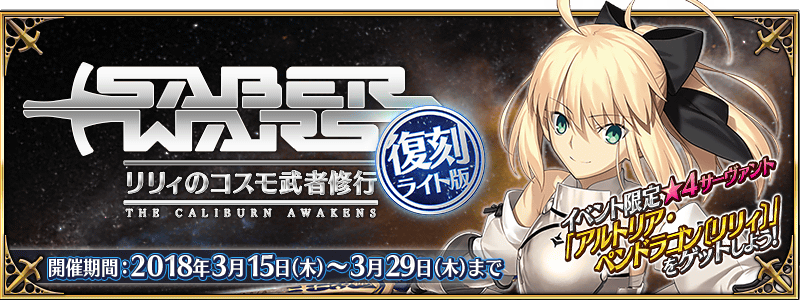
時間是2016年，正值人理繼續紛爭之際。
短暫的和平來到共和國跟帝國軍都不存在的迦勒底。
就在那時，突然從宇宙出現神秘的地球外生命體。
外星人的目的為何？阿爾托莉元素又是什麼？
隸屬於寶具不成長同盟的Saber Lily，她的壯烈修行就此展開。
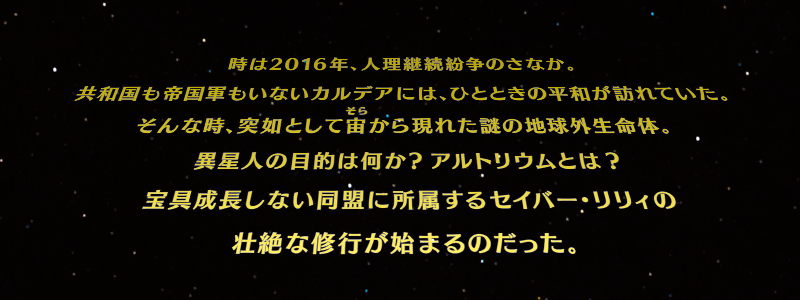
◆活動舉辦期間◆
2018年3月15日(四) 17:00～3月29日(四) 11:59
◆活動概要◆
舉辦期間限定活動「復刻:Saber Wars ～Lily的宇宙武者修行～ 輕量版」！
在迦勒底突然出現的神秘地球外生命體。
做為Master，你能見證到阿爾托莉亞・潘德拉剛〔Lily〕的成長嗎…。
敬請期待送上由奈須きのこ執筆的完全原創故事的期間限定活動「復刻:Saber Wars ～Lily的宇宙武者修行～ 輕量版」。
挑戰活動關卡收集不可思議的物質「阿爾托莉元素」，得到「★4(SR)阿爾托莉亞・潘德拉剛〔Lily〕」吧！
※本活動為再調整2016年舉辦的期間限定活動「Saber Wars ～Lily的宇宙武者修行～」更容易遊玩的「復刻輕量版活動」。
◆活動參加條件◆
所有的Master對象
※新Master必須通過至「特異點F 炎上汙染都市 冬木 第3節」。
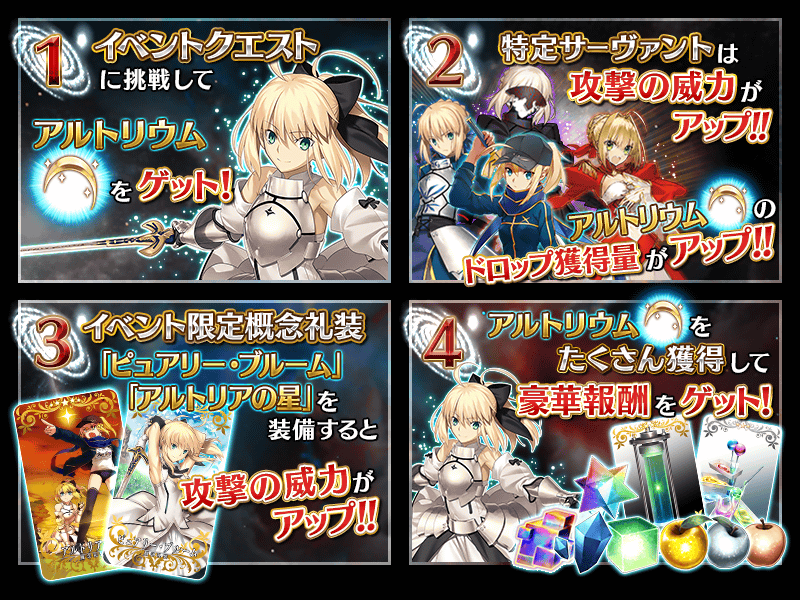
◆主線關卡◆
享受故事的主線關卡會逐日開放。
通過主線關卡「episode I」的話會開放「モンスター襲来！ I」關卡。
※「モンスター襲来！」關卡為主線關卡的一部份。
在下述表格內「episode」之間顯示「モンスター襲来！」關卡的情況為通過「モンスター襲来！」關卡才會開放下個「episode」。
| 主線關卡 | 開放時間表 |
|---|---|
| episode I | 3月15日(四) 17:00～ 3月29日(四) 11:59 |
| モンスター襲来！ I | |
| episode II | 3月16日(五) 17:00～ 3月29日(四) 11:59 |
| モンスター襲来！ II | |
| episode III | 3月17日(六) 17:00～ 3月29日(四) 11:59 |
| モンスター襲来！ III | |
| episode IV | 3月18日(日) 17:00～ 3月29日(四) 11:59 |
| episode V | 3月19日(一) 17:00～ 3月29日(四) 11:59 |
| episode VI | 3月20日(二) 17:00～ 3月29日(四) 11:59 |
◆自由關卡◆
通過主線關卡「episode I」的話，會開放可收集活動専用道具的自由關卡。
通過各自由關卡的話就會依序開放下個階級。
※請注意只有「機材集め 超時空級」自3月20日(二)17:00開放。
另外，關於「機材集め 超時空級」的開放條件，除了通過前1個階級，也必須通過主線關卡。
| 自由關卡 |
|---|
| 機材集め 初級 |
| 機材集め 中級 |
| 機材集め 上級 |
| 機材集め 超級 |
| 機材集め 彗星級 |
| 機材集め 惑星級 |
| 機材集め 星団級 |
| 機材集め 銀河級 |
| 機材集め 超時空級 |
「阿爾托莉元素」的獲得量到達一定量的話，對應獲得量可獲得達成報酬。
達成報酬可於「活動點數報酬」確認。
※「阿爾托莉元素」的獲得量靠於活動關卡掉落「阿爾托莉元素」獲得來計算。
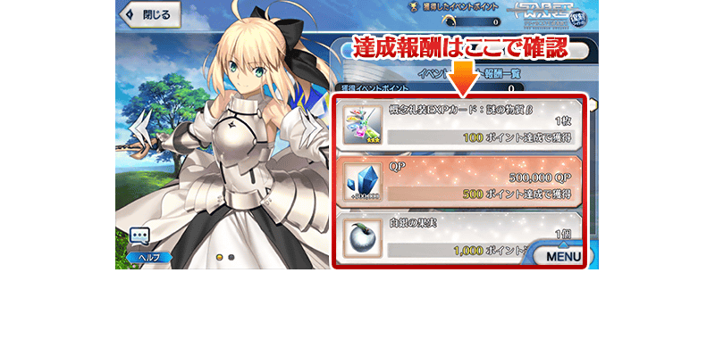
◆超值攻略方法・其1◆
Servant「謎之女主角X(Assassin)」在期間限定活動「復刻:Saber Wars ～Lily的宇宙武者修行～ 輕量版」的活動關卡中的攻擊威力及活動道具「阿爾托莉元素」的掉落獲得量會提升。
※請注意於各關卡的道具掉落率並非100％。
◆超值攻略方法・其2◆
Saber職階的全Servant在期間限定活動「復刻:Saber Wars ～Lily的宇宙武者修行～ 輕量版」的活動關卡中的攻擊威力及活動道具「阿爾托莉元素」的掉落獲得量會提升。
※各Servant增加量有所差異。
※請注意於各關卡的道具掉落率並非100％。
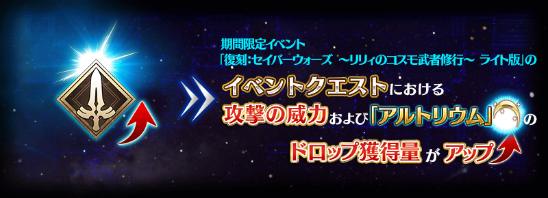
※自3月14日(三) 17:00，在Servant選擇畫面和Servant強化畫面等中，追加「下次活動對象」篩選器。
由於是只顯示於下個舉辦活動活躍Servant的便利功能，敬請活用。
◆超值攻略方法・其3◆
裝備於聖晶石召喚Pick Up中的期間限定概念禮裝「紅蓮なり影の国」「みこっと！花嫁修業」「正射必中」的話，在期間限定活動「復刻:Saber Wars ～Lily的宇宙武者修行～ 輕量版」中的活動専用道具「真空管」「萬能透鏡」「Ｇ型變換器」的掉落獲得數會提升。
※請注意於各關卡的道具掉落率並非100％。
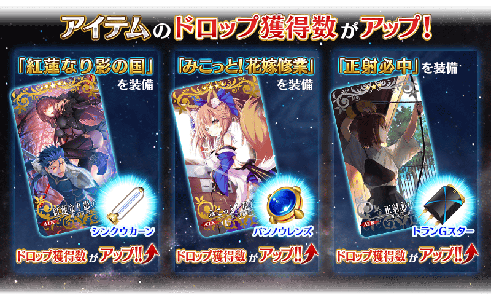
◆超值攻略方法・其4◆
裝備可在活動道具交換和活動點數報酬入手的活動限定概念禮裝「ピュアリー・ブルーム」「アルトリアの星」的話，在期間限定活動「復刻:Saber Wars ～Lily的宇宙武者修行～ 輕量版」的活動關卡中的攻擊威力會提升。
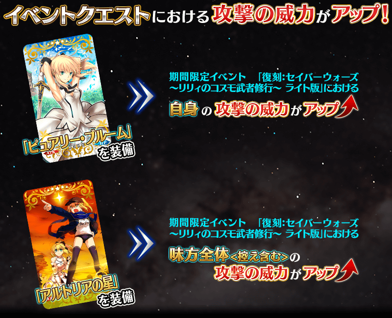
◆超值攻略方法・其5◆
3月16日(五) 17:00以後，對通過主線關卡「episode I」的Master對象開放可大量獲得阿爾托莉元素的加成關卡。
各加成關卡初次通過後就會消失。
整備隊伍挑戰關卡吧！
| 關卡名 | 時間表 |
|---|---|
| 宇宙生物襲来！ I | 3月16日(五) 17:00～ 3月29日(四) 11:59 |
| 宇宙生物襲来！ II | 3月17日(六) 17:00～ 3月29日(四) 11:59 |
| 宇宙生物襲来！ III | 3月18日(日) 17:00～ 3月29日(四) 11:59 |
| 宇宙生物襲来！ IV | 3月19日(一) 17:00～ 3月29日(四) 11:59 |
| 宇宙生物襲来！ Ⅴ | 3月20日(二) 17:00～ 3月29日(四) 11:59 |
| 宇宙生物襲来！ VI | 3月21日(三) 17:00～ 3月29日(四) 11:59 |
| 宇宙生物襲来！ VII | 3月22日(四) 17:00～ 3月29日(四) 11:59 |
| 宇宙生物襲来！ VIII | 3月23日(五) 17:00～ 3月29日(四) 11:59 |
| 宇宙生物襲来！ IX | 3月24日(六) 17:00～ 3月29日(四) 11:59 |
| 宇宙生物襲来！ Ⅹ | 3月25日(日) 17:00～ 3月29日(四) 11:59 |
| 宇宙生物襲来！ XI | 3月26日(一) 17:00～ 3月29日(四) 11:59 |
| 宇宙生物襲来！ XII | 3月27日(二) 17:00～ 3月29日(四) 11:59 |
| 宇宙生物襲来！ XIII | 3月28日(三) 17:00～ 3月29日(四) 11:59 |
| 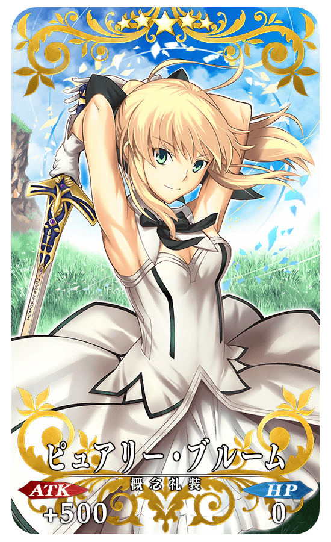 |
★★★★★SSR |
| 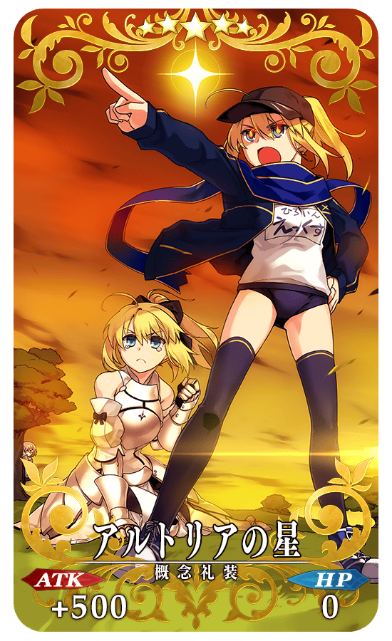 |
★★★★★SSR |
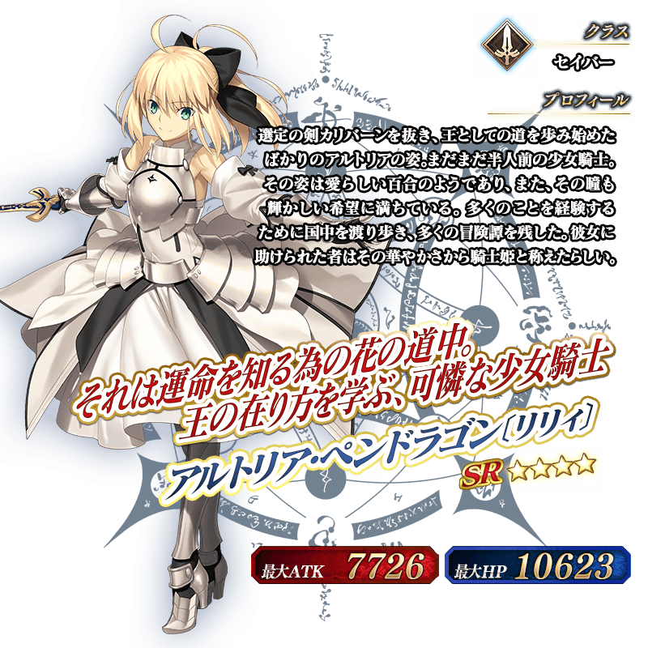
介紹阿爾托莉亞・潘德拉剛〔Lily〕的寶具演出！
在「Fate/Grand Order」官方網站內的公告中，公開了「★4(SR)阿爾托莉亞・潘德拉剛〔Lily〕」的寶具演出。敬請確認。
◆得到活動限定概念禮裝經驗值卡「謎の物質α」「謎の物質β」吧！◆
做為活動限定關卡的通過報酬和活動點數報酬，可入手能大幅強化概念禮裝的經驗值卡！
通過關卡，藉此機會強化中意的概念禮裝吧！
◆交換方法◆
交換期限:2018年3月15日(四) 17:00～4月4日(三) 11:59
※交換期間結束後「真空管」「萬能透鏡」「Ｇ型變換器」會消失。
活動専用道具可自點擊管理室(ターミナル)畫面右上「活動報酬」的「活動道具交換」畫面，交換以下的道具。
※英靈結晶・流星之芙芙ALL★4(HP)會在通過期間限定活動「復刻:Saber Wars ～Lily的宇宙武者修行～ 輕量版」的主線關卡後開放。
◆能用真空管交換的道具◆
| 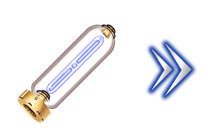 |
【活動限定概念禮裝】 【技能強化＆靈基再臨素材】 【靈基再臨素材】 【其他道具】 |
◆能用萬能透鏡交換的道具◆
【活動限定概念禮裝】 【技能強化＆靈基再臨素材】 【靈基再臨素材】 【其他道具】 |
◆能用Ｇ型變換器交換的道具◆
| 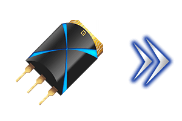 | 【活動限定概念禮裝】 【技能強化＆靈基再臨素材】 【其他道具】 |
以通過「復刻:Saber Wars ～Lily的宇宙武者修行～ 輕量版」主線關卡及「終局特異點」的Master為對象開放高難易度的「挑戰關卡」。
「挑戰關卡」就算在通過後也不會消失，能無數次挑戰，可以變更Servant和概念禮裝的組合後再次挑戰。
※關卡通過報酬、戰利品、Master經驗值、魔術禮裝經驗值、絆點數只可在初次通過時獲得。
◆挑戰關卡開放時間◆
2018年3月20日(二) 17:00
◆挑戰關卡參加條件◆
通過「復刻:Saber Wars ～Lily的宇宙武者修行～ 輕量版」主線關卡及「終局特異點」的Master才能參加
◆挑戰關卡初次通過報酬◆
傳承結晶 1個

做為恆常新追加強化阿爾托莉亞・潘德拉剛〔Lily〕能力的特別關卡「Servant強化關卡」。
不僅進行對象Servant的強化，也可獲得聖晶石做為關卡通過報酬。
※請注意Servant強化關卡並無冒險部份。
◆追加時間◆
2018年3月15日(四) 17:00～
◆參加條件◆
所持有的強化對象Servant，必須使其最終再臨。
※未持有對象Servant的話，不會出現關卡。
※關卡並無舉辦期限。
◆「復刻 Saber Wars ～Lily的宇宙武者修行～Pick Up召喚(每日交替)」期間◆
期間:2018年3月15日(四) 17:00～3月29日(四) 11:59
舉辦期間限定「復刻 Saber Wars ～Lily的宇宙武者修行～Pick Up召喚(每日交替)」！
「★5(SSR)謎之女主角X(Assassin)」期間限定で登場！
變更在2016年舉辦的「謎之女主角XPick Up召喚」一部份内容進行復刻。
本次包含上述，Pick Up4位的Servant！
「★5(SSR)阿提拉(Saber)」「★5(SSR)阿爾托莉亞・潘德拉剛(Saber)」「★5(SSR)莫德雷德(Saber)」以每日交替Pick Up，「★5(SSR)謎之女主角X(Assassin)」常駐Pick Up！
另外本次只限期間限定Servant除外的Saber職階Servant為召喚對象。
※謎之女主角X(Assassin)在Pick Up期間結束後不會追加到故事召喚。
※阿提拉(Saber)、阿爾托莉亞・潘德拉剛(Saber)、莫德雷德(Saber)在Pick Up期間結束後仍會在故事召喚被抽出。
※藉由章節進行追加的Saber職階Servant也會被抽出。
※做為被抽出對象的Servant，除了期間限定Servant，在Pick Up期間結束後仍會在故事召喚被抽出。
詳情請在聖晶石召喚畫面左下的召喚詳細確認。
裝備期間限定概念禮裝「★5(SSR)紅蓮なり影の国」「★4(SR)みこっと！花嫁修業」「★3(R)正射必中」的話，在期間限定活動「復刻:Saber Wars ～Lily的宇宙武者修行～ 輕量版」中活動専用道具的掉落獲得數會提升。
※「★3(R)正射必中」在Pick Up期間中，也能在友情點數召喚獲得。
Pick Up期間中，期間限定Servant、Pick Up Servant、期間限定概念禮裝的出現機率提升！
10次召喚中確定1張★4(SR)以上和確定1位★3(R)以上的Servant！
※確定★4(SR)以上包含Servant和概念禮裝。
※所謂「出現機率提升」意指比同稀有度的Servant及概念禮裝出現機率更高的設定。
| 每日交替Pick Up期間 | 每日交替Pick Up內容 |
|---|---|
| 3月15日(四) 17:00～ 3月22日(四) 22:59 |
謎之女主角X(Assassin) |
| 3月22日(四) 23:00～3月23日(五) 22:59 | 阿爾托莉亞・潘德拉剛(Saber) 謎之女主角X(Assassin) |
| 3月23日(五) 23:00～3月24日(六) 22:59 | 阿提拉(Saber) 謎之女主角X(Assassin) |
| 3月24日(六) 23:00～3月25日(日) 22:59 | 莫德雷德(Saber) 謎之女主角X(Assassin) |
| 3月25日(日) 23:00～ 3月29日(四) 11:59 |
謎之女主角X(Assassin) |
※請注意會以每日交替變更Pick Up的Servant。
謎之女主角X(Assassin)的戰鬥動作及寶具演出翻新！
◆翻新時間◆
2018年3月15日(四) 17:00～
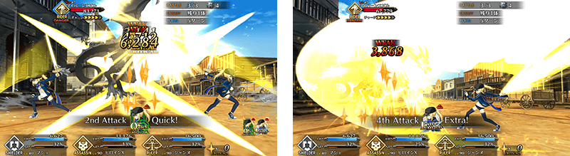
介紹翻新後的謎之女主角X(Assassin)寶具演出！
在「Fate/Grand Order」官方網站內的公告中，公開了「★5(SSR)謎之女主角X(Assassin)」的寶具演出。敬請確認。
介紹阿提拉(Saber)、阿爾托莉亞・潘德拉剛(Saber)、莫德雷德(Saber)的寶具演出！ 在「Fate/Grand Order」官方網站內的公告中，公開了「★5(SSR)阿提拉(Saber)」「★5(SSR)阿爾托莉亞・潘德拉剛(Saber)」「★5(SSR)莫德雷德(Saber)」的寶具演出。敬請確認。
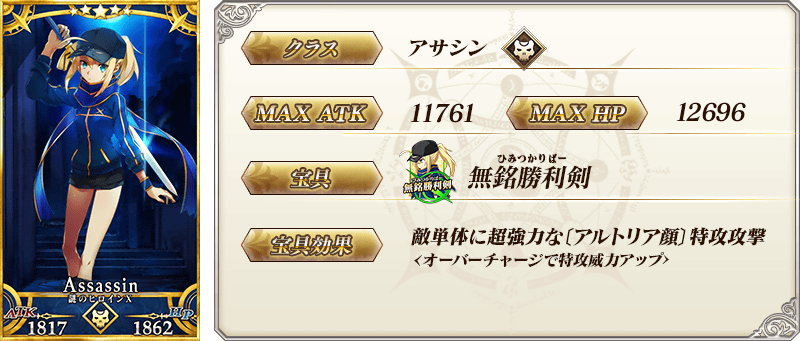

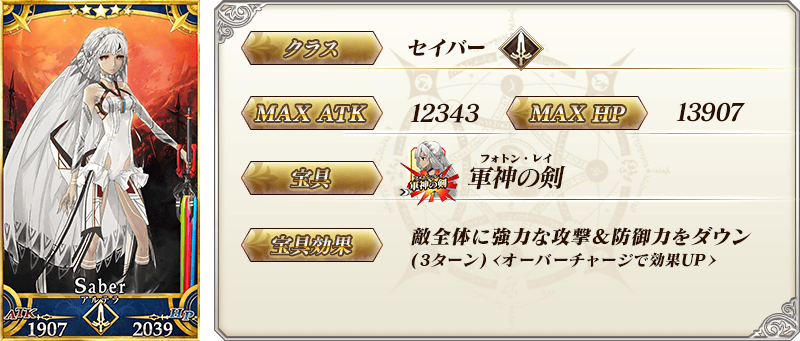
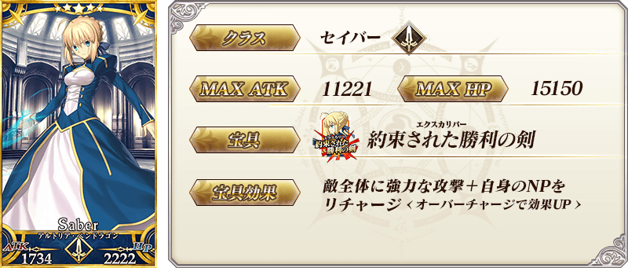

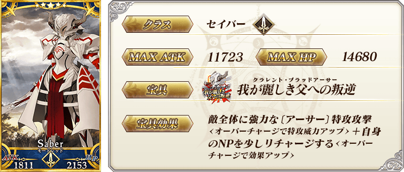

| 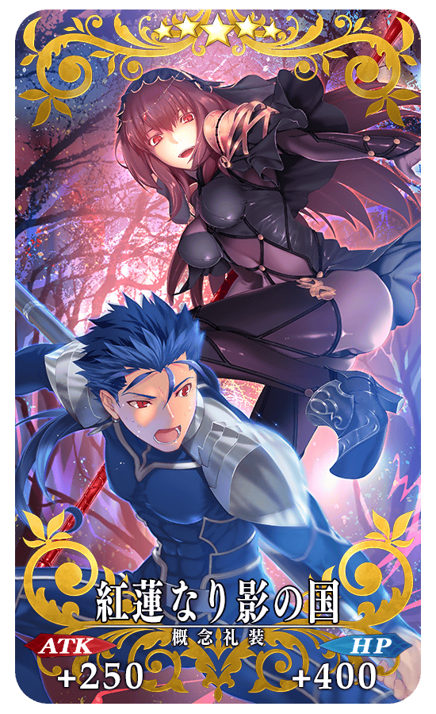 |
★★★★★SSR |
| 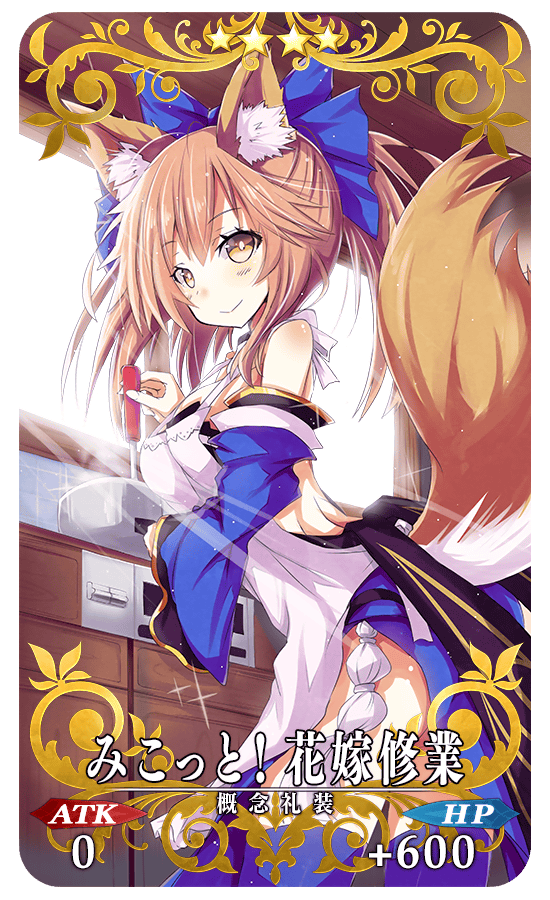 |
★★★★SR |
| 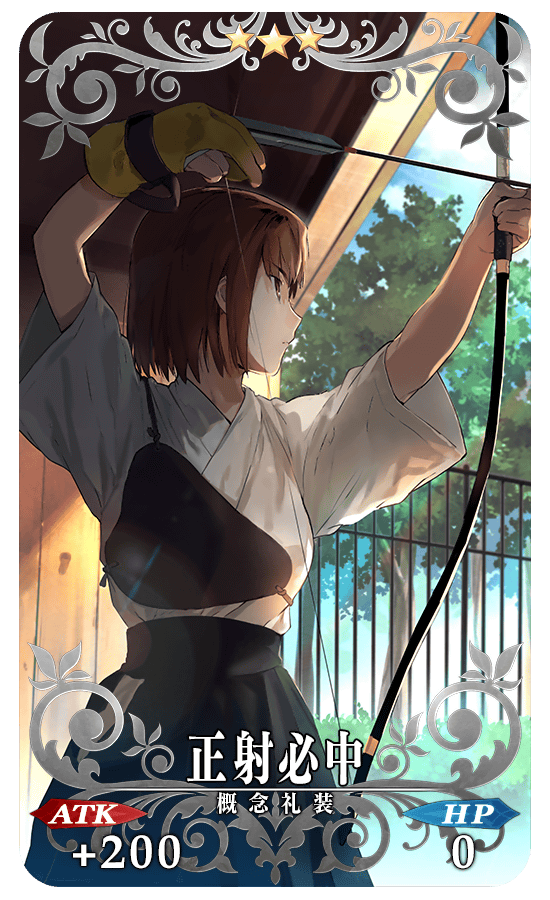 |
★★★R |
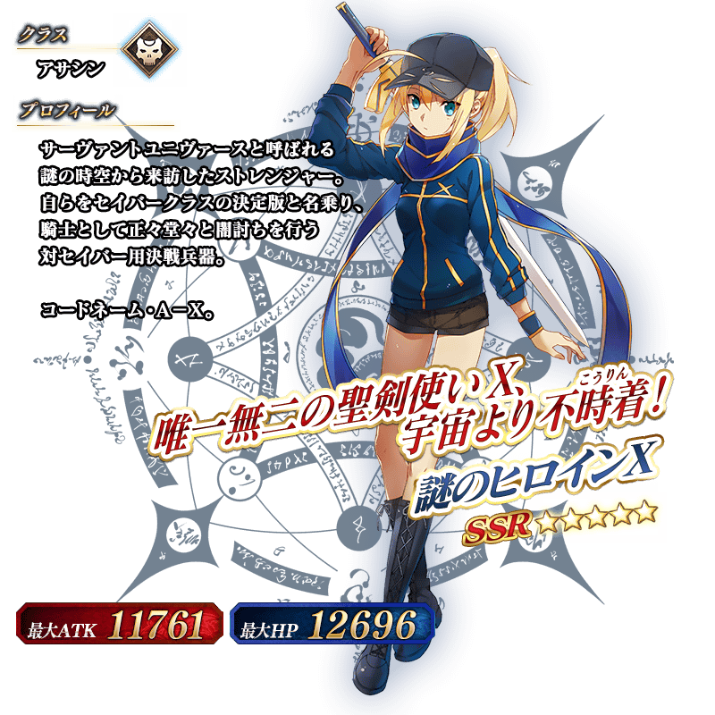

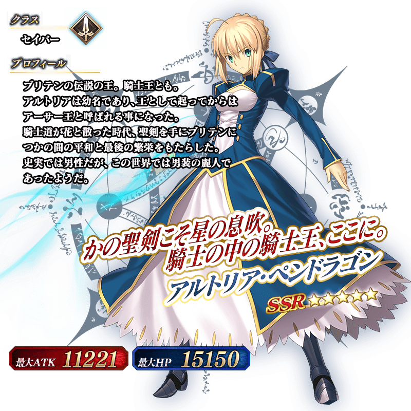
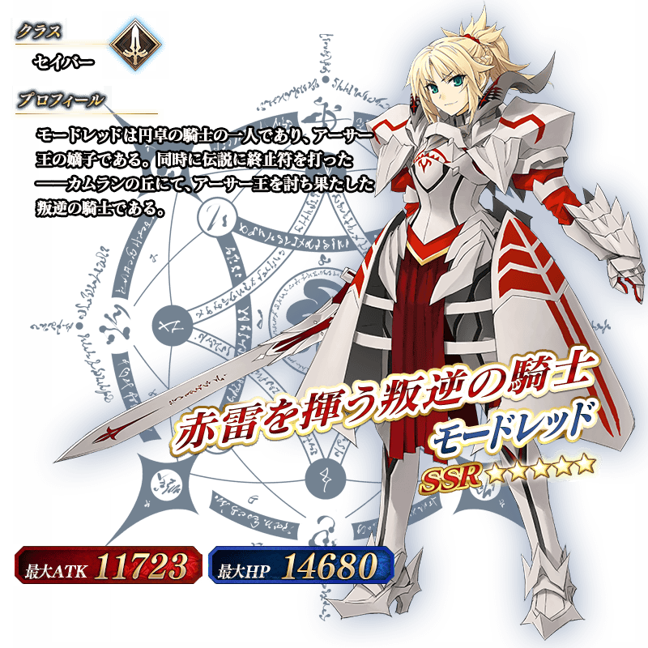